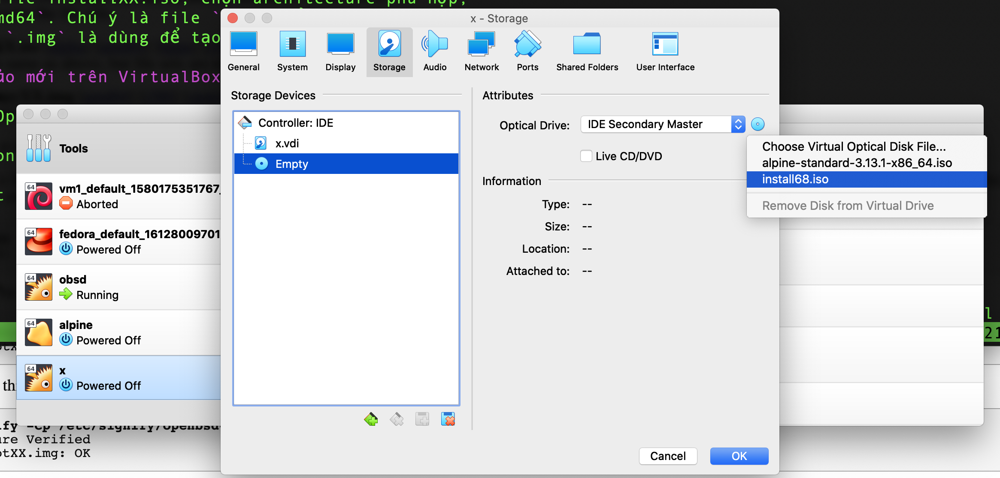
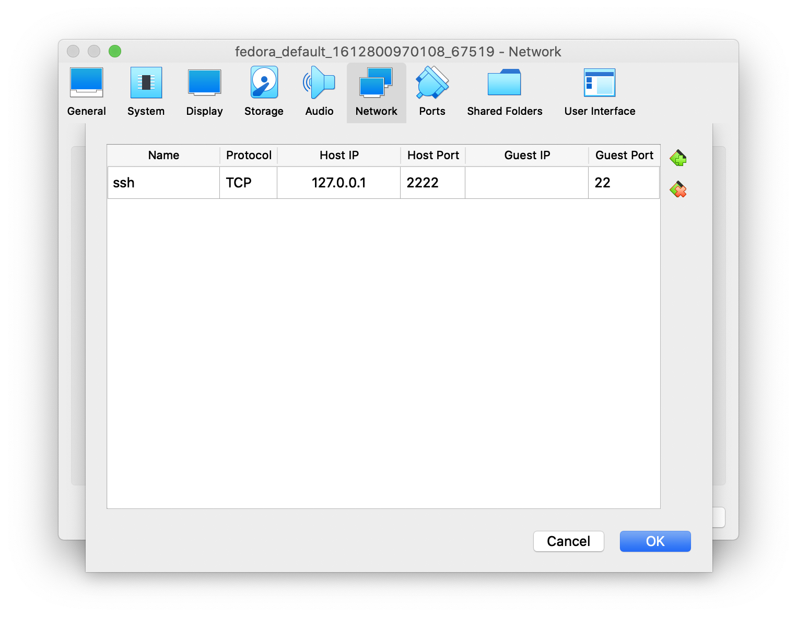

Nếu vì một lý do gì bạn không dùng vagrant (không tin tưởng người build vagrant box chẳng hạn), việc tạo máy ảo OpenBSD trên VirtualBox không có gì phức tạp, nhưng cần chút chú ý.
Tải file installXX.iso OpenBSD mới nhất
Truy cập https://www.openbsd.org/faq/faq4.html#Download
rồi tìm tới file installXX.iso, chọn architecture phù hợp,
thường là amd64. Chú ý là file .iso để tạo đĩa CD/cài
máy ảo. File .img là dùng để tạo USB.
Tạo máy ảo mới trên VirtualBox
New > BSD > OpenBSD 64 bits
Continue > Continue .... > Create
Trước khi bật máy ảo lên, chọn Settings > Storage > Chọn hình đĩa CD rồi chọn tới file ISO vừa tải.

QUAN TRỌNG: chọn Audio > bỏ tick "Enable audio" đi, nếu không, VirtualBox sẽ full CPU sau khi sleep mặc dù xem trên OpenBSD thì không thấy dùng CPU.
Settings > Network > Adapter 1 > NAT > Port forwarding, thêm một dòng mới, chọn host port là 1 số từ 2222 đến 22XX, Guest Port là 22.

Cài OpenBSD
Bật máy ảo lên, Install > hầu hết là enter chọn các option mặc định, mất tầm 2 phút để cài. Khi có hỏi xedodm, chọn No, khi hỏi sshd, chọn yes.
Cài xong reboot máy ảo, vào Settings > Storage > bỏ file ISO đã nhét vào ra. Máy sẽ boot vào OpenBSD.
SSH vào OpenBSD
Chuột phải chọn máy ảo > Start > Headless start. Chờ vài giây rồi ssh vào máy:
ssh root@127.0.0.1 -p 2222
Nhập password đã chọn lúc cài đặt.
$ ssh root@127.0.0.1 -p2222
root@127.0.0.1's password:
Last login: Wed Feb 10 22:35:32 2021 from 10.0.2.2
OpenBSD 6.8 (GENERIC) #97: Sun Oct 4 18:00:46 MDT 2020
Welcome to OpenBSD: The proactively secure Unix-like operating system.
Please use the sendbug(1) utility to report bugs in the system.
Before reporting a bug, please try to reproduce it with the latest
version of the code. With bug reports, please try to ensure that
enough information to reproduce the problem is enclosed, and if a
known fix for it exists, include that as well.
obsd#
Xong.
Kết luận
Cài đặt máy ảo OpenBSD là một việc đơn giản, nhanh chóng. Have fun.